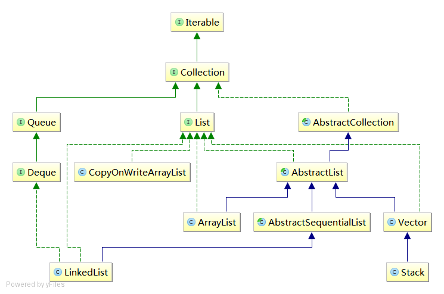

List
List： 有序 的集合（也被称为序列），可以保存重复的元素。
它除了继承Collection接口的方法，还新增了如下方法：
-
基于位置的访问(Positional access)：基于索引（位置数字）操作list上的元素，例如：get, set, add, addAll ,remove -
查找(Search)：查询list中是否含有指定的对象，并返回它的位置数字。查询方法包括：indexOf、lastIndexOf -
迭代(Iteration)：继承Iterator并根据list的顺序特性进行了扩展。listIterator方法提供了该支持。 -
范围-视图(Range-view)：
先来看一下List的整个UML图，完整版的在这里： 
{kind=link}
我们可以看到List接口继承了Collection接口，它的实现类主要有：AbstractList、BastractSequentiaList、ArrayList、LinkedList、Stack、Vector，接下来我们会一一介绍它们。
实现类
ArrayList
ArrayList是用大小可变数组实现的List，接受所有元素（包括null）。
它实现了标记接口RandomAcess，意味着其支持快速随机访问。
ArrayList源码：
//默认初始化大小
private static final int DEFAULT_CAPACITY = 10;
//空数组，供无参构造函数使用
private static final Object[] EMPTY_ELEMENTDATA = {};
// 可是看到ArrayList内部是一个对象数组来存储数据的
transient Object[] elementData;
// 由于是可变长数组，所以在add操作时需要校验数组长度是否够用，不够用则需要进行扩容，而grow就是进行的扩容操作
private void grow(int minCapacity) {
// overflow-conscious code
int oldCapacity = elementData.length;
int newCapacity = oldCapacity + (oldCapacity >> 1);
if (newCapacity - minCapacity < 0)
newCapacity = minCapacity;
if (newCapacity - MAX_ARRAY_SIZE > 0)
newCapacity = hugeCapacity(minCapacity);
// minCapacity is usually close to size, so this is a win:
elementData = Arrays.copyOf(elementData, newCapacity);
}
//数组长度
private int size;
//指定长度的构造函数
public ArrayList(int initialCapacity) {
super();
if (initialCapacity < 0)
throw new IllegalArgumentException("Illegal Capacity: "+
initialCapacity);
this.elementData = new Object[initialCapacity];
}
//无参构造函数
public ArrayList() {
super();
this.elementData = EMPTY_ELEMENTDATA;
}
从源码可以看出（贴的不全好像也看不出来- _ -!），如果能提前指定大小，可以避免频繁的扩容操作。
LinkedList
LinkedList是用 双向 链表实现的List，接受所有元素（包括null）。
LinkedList源码：
//链表长度
transient int size = 0;
//链表的头节点
transient Node<E> first;
//链表的尾节点
transient Node<E> last;
public LinkedList() {
}
//内部类，可以看出是双向链表
private static class Node<E> {
E item;
Node<E> next;
Node<E> prev;
Node(Node<E> prev, E element, Node<E> next) {
this.item = element;
this.next = next;
this.prev = prev;
}
}
//由于是链表，所以随机访问速度是不能保证的，因此LinkedList也没有实现RandomAccess这个标记接口
public E get(int index) {
checkElementIndex(index);
return node(index).item;
}
Node<E> node(int index) {
if (index < (size >> 1)) {
Node<E> x = first;
for (int i = 0; i < index; i++)
x = x.next;
return x;
} else {
Node<E> x = last;
for (int i = size - 1; i > index; i--)
x = x.prev;
return x;
}
}
public int indexOf(Object o) {
int index = 0;
if (o == null) {
for (Node<E> x = first; x != null; x = x.next) {
if (x.item == null)
return index;
index++;
}
} else {
for (Node<E> x = first; x != null; x = x.next) {
if (o.equals(x.item))
return index;
index++;
}
}
return -1;
}
LinkedList也实现了Deque接口，提供先进先出(FIFO)操作的支持，这个我们在Queue的部分在具体介绍。
Vector
Vector可以看作是线程同步版的ArrayList。
Vector源码：
public synchronized E get(int index) {
if (index >= elementCount)
throw new ArrayIndexOutOfBoundsException(index);
return elementData(index);
}
可以看出，它实现同步的方式，是在方法前加了synchronized的修饰。
Stack
Stack实现了后进先出(LIFO)的对象堆栈。
Deque接口及其实现提供了LIFO堆栈操作的更完整和更一致的set，应该优先使用此set，而非Stack
CopyOnWriteArrayList
关于Copy-On-Write策略的详细介绍，请看Java中的Copy-On-Write容器
java.util.concurrent.CopyOnWriteArrayList，它的完整名称表明了它的身份，可以看做是ArrayList的一个线程安全的变体，其中所有可变操作（add、set等）都是通过对底层数组进行一次新的复制来实现的（这也是CopyOnWrite名字的由来）。
CopyOnWriteArrayList源码：
final transient ReentrantLock lock = new ReentrantLock();
// 只有getArray和setArray两个方法可以操作该变量
private transient volatile Object[] array;
final Object[] getArray() {
return array;
}
final void setArray(Object[] a) {
array = a;
}
public CopyOnWriteArrayList() {
setArray(new Object[0]);
}
// 这里为了保障线程安全进行了加锁
public boolean add(E e) {
final ReentrantLock lock = this.lock;
lock.lock();
try {
Object[] elements = getArray();
int len = elements.length;
Object[] newElements = Arrays.copyOf(elements, len + 1);
newElements[len] = e;
setArray(newElements);
return true;
} finally {
lock.unlock();
}
}
private E get(Object[] a, int index) {
return (E) a[index];
}
// 读操作是没有锁的，因为写的时候不会锁住旧的ArrayList
public E get(int index) {
return get(getArray(), index);
}
日期：2014-05-20、2014-05-21
参考资料：The Collections Framework、The Java Tutorials--The List Interface、视频: Bjarne Stroustrup：为什么你应当避开链表、聊聊并发-Java中的Copy-On-Write容器、CopyOnWriteArrayList类set方法疑惑？